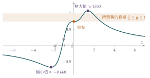

STEP I 1991，第 6 題
繼續之前，請先閱讀題目（原題為英文）。題目載於 STEP Support Programme 的題目資料庫： step.maths.org/questions/91-s1-q6
引子
大多數考試題目都要求你寫出一個論證。這一題卻給你兩個論證，要你把它們逐一拆解。這是一種截然不同的技巧，也是你在大學裏最常用到的技巧：檢查自己的作業、閱讀書中的證明（proof）並判斷是否相信它、批改朋友的解答、審閱論文。
這裏的論證錯得很有啟發性。每一步看起來都像你見過上百次的東西。有些步驟含有計算上的失誤，但更嚴重的是邏輯上的錯誤：即使計算無誤，結論也推不出來。這類錯誤會一直殘留到專業數學之中，而本章要談的正是如何把它們找出來。
動筆之前
當題目要求你「評論每一步」時，你在每一步應該檢查甚麼？動筆之前先列一張清單。
一張好的清單至少有三個問題。計算正確嗎？ 這一步能從前面的步驟推出來嗎？ 有沒有隱藏的假設（例如函數是連續的、極限存在、駐點必定是極大點或極小點）？題目還問到結論會否無論如何都是對的。錯誤的論證也可以有正確的結論，所以這一點需要另行檢查。
逐步解題
階段 1 導數對嗎？
用商法則（quotient rule）對 \(\mathrm{g}\) 求導。\(\mathrm{g}'(x) = 0\) 在哪裏成立？直接檢查 \(x = 1\) 和 \(x = -1\)。
由商法則， \[\mathrm{g}'(x) = \frac{6x^2(x^4 + 4) - (2x^3 + 3)\cdot 4x^3}{(x^4 + 4)^2} = \frac{-2x^6 - 12x^3 + 24x^2}{(x^4 + 4)^2} = \frac{-2x^2\bigl(x^4 + 6x - 12\bigr)}{(x^4 + 4)^2}.\] 所以當 \(x = 0\) 或 \(x^4 + 6x - 12 = 0\) 時，\(\mathrm{g}'(x) = 0\)。在 \(x = 1\)，\(x^4 + 6x - 12 = -5\)；在 \(x = -1\)，其值為 \(-17\)。兩者都不是駐點（stationary point）。第一個斷言是錯的。
四次多項式 \(x^4 + 6x - 12\) 在 \(x = 0\) 的值是 \(-12\)，而且在兩個方向上都趨向 \(+\infty\)，所以它有（至少）一個正根和一個負根；它恰好有兩個實根，因為它的二階導數 \(12x^2\) 非負，所以它是凸（convex）的，最多只能穿過零兩次。數值上，兩個根是 \(x \approx 1.386\) 和 \(x \approx -2.247\)。
階段 2 函數值對嗎？
\(\mathrm{g}(0) = \frac34\) 是正確的，而 \(\mathrm{g}(1) = \frac{5}{5} = 1\)。但 \(\mathrm{g}(-1) = \frac{-2 + 3}{1 + 4} = \frac15\)，不是 \(1\)。即使按它自己的思路，這個論證也有計算錯誤：它似乎假設了 \(\mathrm{g}\) 是偶函數。
階段 3 比較函數值能判斷哪個是極大點嗎？
假設一個函數恰好有兩個駐點，駐點值分別是 \(\frac34\) 和 \(1\)。能否由此推出前者是極小點、後者是極大點？
不能。駐點的性質是局部（local）的性質：它取決於函數在該點附近的表現，而不是該點的函數值與別處的函數值孰大孰小。一個函數的局部極大值可以低於局部極小值（想想 \(x + 2\sin x\)），駐點也可以兩者皆不是。在這裏，在 \(x = 0\) 附近，因式 \(x^4 + 6x - 12\) 接近 \(-12\)，所以 \[\mathrm{g}'(x) = \frac{-2x^2(x^4 + 6x - 12)}{(x^4 + 4)^2} > 0 \qquad\text{對足夠小的 } x \neq 0.\] 導數在 \(0\) 的兩側都是正的：\(x = 0\) 是一個駐拐點（stationary point of inflection），不是極小點。
階段 4 駐點值能界定函數的範圍嗎？
即使駐點都求對了，為甚麼仍不能斷定 \(\mathrm{g}\) 的每一個值都介乎最小與最大的駐點值之間？找出一個使 \(\mathrm{g}(x) < \frac34\) 的 \(x\) 值。
駐點只描述局部的表現。全局（global）的表現還取決於定義域兩端的情況，在這裏即 \(x \to \pm\infty\) 時的情況。由於當 \(x \to \pm\infty\) 時 \(\mathrm{g}(x) \to 0\)，而且每當 \(2x^3 + 3 < 0\)，即 \(x < -\sqrt[3]{3/2} \approx -1.14\) 時，\(\mathrm{g}(x) < 0\)，所以這個函數會取負值。例如 \(\mathrm{g}(-2) = \frac{-13}{20}\)。因此結論 \(\frac34 \leq \mathrm{g}(x) \leq 1\) 是錯的（圖 3.1.1）。
正確的說法是：\(\mathrm{g}\) 遞增至 \(x \approx 1.386\) 處約為 \(1.083\) 的全局極大值，然後向 \(0\) 遞減；在左邊，它由 \(0\) 遞減至 \(x \approx -2.247\) 處約為 \(-0.668\) 的全局極小值，然後遞增，經過 \(x = 0\)（在該處有一個水平拐點），一直升到極大值。所以對所有 \(x\)，\(-0.668 \lesssim \mathrm{g}(x) \lesssim 1.083\)。

階段 5 積分
對 \(-3(1-x)^{-4}\) 求導。你會得到 \((1-x)^{-3}\) 嗎？
\(\dfrac{\mathrm{d}}{\mathrm{d}x}\bigl[-3(1-x)^{-4}\bigr] = -3 \cdot (-4)(1-x)^{-5} \cdot (-1) = -12(1-x)^{-5}\)。冪和係數都錯了。正確的原函數（antiderivative）是 \[\int (1-x)^{-3}\,\mathrm{d}x = \tfrac12(1-x)^{-2} + C,\] 你可以求導來驗證。
用正確的原函數，\(\bigl[\frac12(1-x)^{-2}\bigr]_{-1}^{3} = \frac12 \cdot \frac14 - \frac12 \cdot \frac14 = 0\)。那麼答案原來還是對的。真的嗎？
並不是。微積分基本定理（fundamental theorem of calculus）\(\int_a^b F'(x)\,\mathrm{d}x = F(b) - F(a)\) 要求被積函數在整個區間 \([a, b]\) 上連續（continuous）。這裏 \((1-x)^{-3}\) 在 \(x = 1\) 處沒有定義，而這一點位於 \([-1, 3]\) 之內，而且在 \(x = 1\) 附近函數值極其巨大。這個積分必須當作瑕積分（improper integral）來處理，在出問題的那一點拆開： \[\int_{-1}^{1} (1-x)^{-3}\,\mathrm{d}x = \lim_{\varepsilon \to 0^+} \Bigl[\tfrac12(1-x)^{-2}\Bigr]_{-1}^{1-\varepsilon} = \lim_{\varepsilon \to 0^+} \left( \frac{1}{2\varepsilon^2} - \frac18 \right) = +\infty.\] 由 \(-1\) 到 \(1\) 的積分是無窮大（而由 \(1\) 到 \(3\) 的積分是 \(-\infty\)），所以 \(\int_{-1}^{3}(1-x)^{-3}\,\mathrm{d}x\) 不存在。結論「\(= 0\)」是錯的，原因不在於真正的值是另一個數，而在於根本沒有值。■
回顧
三類錯誤。計算錯誤（導數、\(\mathrm{g}(-1)\)、原函數）、邏輯錯誤（靠比較函數值來判別駐點的性質；把駐點值當作全局的界）以及隱藏的假設（微積分基本定理中的連續性）。
答案對，理由錯。在第 (ii) 部分改正原函數之後，仍然得出答案 \(0\)，但論證依然無效。答案看似正確，並不能證明推理站得住腳。
局部與全局。導數告訴你的是函數在一點附近的表現。要得出全局的結論，還需要更多資料：定義域兩端的情況，或者函數表現異常之處的情況。
背後的數學
分析學的奠基者也犯過一模一樣的錯誤。柯西（Augustin-Louis Cauchy）在 1821 年的 Cours d’analyse 中「證明」了連續函數的收斂（convergent）和必定連續。1826 年，阿貝爾（Niels Henrik Abel）指出了一個反例（counterexample）：傅立葉級數（Fourier series） \[\sin x - \tfrac12\sin 2x + \tfrac13\sin 3x - \cdots\] 對每一個 \(x\) 都收斂，而且每一項都連續，但它的和在 \(x = \pm\pi\) 處出現跳躍（當 \(-\pi < x < \pi\) 時，它等於 \(x/2\)）。要弄清楚柯西的論證究竟錯在哪裏，花了數十年時間，並由此產生了一致收斂（uniform convergence）的概念，如今每個修讀分析的學生都要學。隱藏的假設，尤其是關於交換兩個極限次序的假設，是整個分析學中最常見的錯誤來源。
帶有前提的定理
這一題中有兩個錯誤，都源於忽視了定理的前提（hypotheses）。
極值定理（extreme value theorem）指出，在有界閉區間 \([a, b]\) 上的連續函數必定取得最大值和最小值。要找出它們，須檢查端點、駐點，以及函數不可導的點：\(|x|\) 在 \([-1, 1]\) 上的最小值在 \(0\) 處取得，而這一點既非端點，亦非駐點。如果 \(\mathrm{f}\) 在區間內部處處可導，則位於內部的最大點或最小點必定是駐點。在整條實數線上，沒有端點可供檢查，函數甚至可能根本沒有最大值；你必須改為考察 \(x \to \pm\infty\) 時的表現。
微積分基本定理要求被積函數在 \([a, b]\) 上連續。如果不連續，積分可能仍然存在（試試 \(\int_0^1 x^{-1/2}\,\mathrm{d}x\)），也可能不存在（如本題），你必須用極限來檢查。
在大學裏，你遇到的每一條定理都附有一張精確的前提清單。訓練的一部分，就是每次使用定理之前，都要把這些前提檢查一遍。
發散積分的一個值
第 (ii) 部分還有一個耐人尋味的註腳。區間 \([-1, 3]\) 關於出問題的點 \(x = 1\) 對稱，而 \((1-x)^{-3}\) 關於該點是「奇」的。如果你挖去一個對稱的缺口 \((1 - \varepsilon, 1 + \varepsilon)\)，再令 \(\varepsilon \to 0\)，兩塊無窮大的部分便會互相抵消，你確實會得到 \(0\)。這稱為柯西主值（Cauchy principal value），在物理學和複分析中確實很有用。但它是一個刻意選取的不同定義，一個誤打誤撞得出這個值的論證，甚麼也沒有證明。
思維技巧
每一步都要檢查三件事：計算對不對，這一步在邏輯上是否成立，以及有甚麼是沒有明說卻已假設了的？
然後另行檢查結論：不正確的論證可以有正確的結論，而「正確」的答案也可以出自無效的論證。對自己的作業也要同樣嚴格審視；你最容易相信的論證，正是你自己的論證。
延伸練習
會說謊的代換。試做 STEP I 1987，第 8 題。一個代換（substitution）似乎顯示某個正的積分等於一個負的積分。準確找出論證在哪裏出錯，然後正確地計算兩個積分。
是對還是錯？試做 STEP I 1998，第 3 題：有四個斷言要你證明或否證。對每一個斷言，動筆之前先判斷你預期是哪一種。
所有馬都是同一種顏色。找出以下用歸納法（induction）寫成的「證明」的漏洞：任何一匹馬都與自己顏色相同；給定 \(n + 1\) 匹馬，由歸納假設，前 \(n\) 匹顏色相同，後 \(n\) 匹也是；兩組有重疊，所以全部 \(n + 1\) 匹顏色相同。
一個確實存在的積分。證明 \(\int_{-1}^{1} |x|^{-1/2}\,\mathrm{d}x\) 存在，儘管被積函數在 \(0\) 處沒有定義，並求出它的值。
延伸閱讀
E. A. Maxwell, Fallacies in Mathematics（Cambridge University Press）。一本經典的謬誤論證集，收錄各種似是而非的錯誤論證，按課題編排，為高中第六學級（sixth form）學生而寫。
Bernard Gelbaum & John Olmsted, Counterexamples in Analysis（Dover）。數以百計的例子，說明定理的前提為何重要。開始修讀分析課程之後，不妨隨手翻閱。
Imre Lakatos, Proofs and Refutations（Cambridge University Press）。一篇精彩的對話，探討數學家如何發現並修正證明中的錯誤。